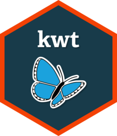

Write a postgisMoR data model to the database
db_write_data_model.RdWrite a postgisMoR data model to the database
Arguments
- x
RelDataModel list created by
kwt::read_json_data_modelorkwt::model_relational_data- schema_name
name of the schema to create the tables in. If NULL, the table names must be in the format schema_name.table_name.
- crs_srid
the SRID of the coordinate reference system to use for geometry columns, if they are present in any of the tables.
- overwrite
logical. If set to TRUE then it will overwrite any existing tables with names matching the tables in the model. Data will be lost.
- conn
database connection object